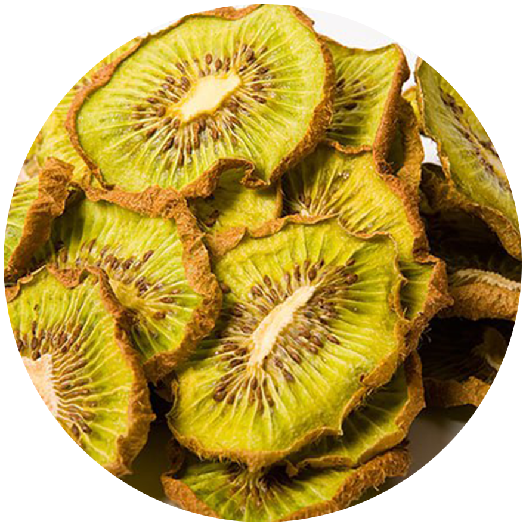
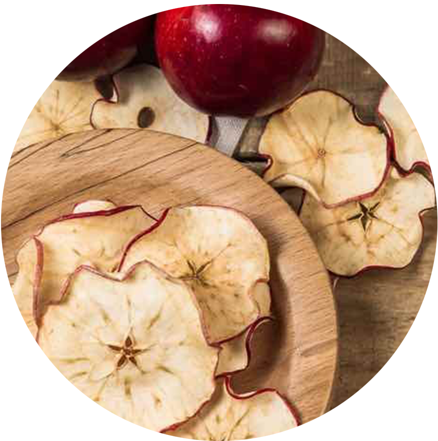

Сухофрукты – это фрукты, из которых большая часть исходной воды было
удалено либо естественным путем, путем сушки на солнце, либо за счет
использования специализированных сушилок или дегидраторов. Сухофрукты
имеют давнюю традицию использования, восходящая к четвертому
тысячелетию до нашей эры в Месопотамии, и ценится из-за своего
сладкого вкуса, питательности и длительного срока хранения.
Сухофрукты богаты эфирными маслами, белками, калием, кальций,
которые помогают повысить иммунитет. Кроме того, наличи в нем
антиоксиданот могут помочь вам бороться с различными инфекциями и
болезнями.
Сухофрукты и орехи отлично подходят для похудения, если вы их едите.
умеренно. В них мало жиров, углеводов, сахара и многого другого։
белки и эфирные масла....
Кто не хочет выглядеть красиво и молодо? Сухофрукты могут помочь
вы с этим и сохранить вашу кожу сияющей и светящейся. Они есть
богат эфирными маслами и антиоксидантами, которые помогают коже
восстановить здоровую кожу и предотвратить старение.
Сухофрукты содержат огромное количество пищевых волокон, которые
помогают бороться с запорами и поддерживать здоровье кишечника.
Известно, что миндаль и орехи кешью предотвращают рак молочной
железы. Они богаты антиоксидантами и фитонутриентами, что
предотвращает активности раковых клеток.
Сухофрукты могут контролировать уровень холестерина и
нормализовать кровь давление особенно изюм. Они также снижают риск
сердечно-сосудистых заболеваний. заболевания, инсульт и др.
Сухофрукты богаты белками, кальцием и другими микроэлементами.
которые помогают поддерживать здоровье костей и укреплять их.
Сухофрукты очень эффективны в борьбе с депрессией и стресс. Они
также улучшают здоровье мозга и память.
Изюм и чернослив богаты железом, что, в свою очередь, помогает
тем, кто страдают анемией. В сухом виде есть необходимые
питательные вещества. фрукты, такие как витамины А, В и К;
минералы, такие как медь, магний и железо; и ненасыщенный жир,
который помогает в регенерации красной крови клеток и гемоглобина
в организме.
Наш Ассортимент
Абрикос
$10

киви
$10
Ананас
$10
апельсин
$10

яблоко
$10
Груша
$10
отзыв клиентов
Сама боль, боль должна внедряться в основной жировой отросток. Но
дальше тяжелая работа правды. В результате это различие откроет
дальнейшие усилия ибо откуда, подобно удовольствию, нет ни малейшей
ошибки? Самостоятельные замечания приветствует!
клиент 1
Сама боль, боль должна внедряться в основной жировой отросток. Но
дальше тяжелая работа правды. В результате это различие откроет
дальнейшие усилия ибо откуда, подобно удовольствию, нет ни малейшей
ошибки? Самостоятельные замечания приветствует!
клиент 2
Сама боль, боль должна внедряться в основной жировой отросток. Но
дальше тяжелая работа правды. В результате это различие откроет
дальнейшие усилия ибо откуда, подобно удовольствию, нет ни малейшей
ошибки? Самостоятельные замечания приветствует!